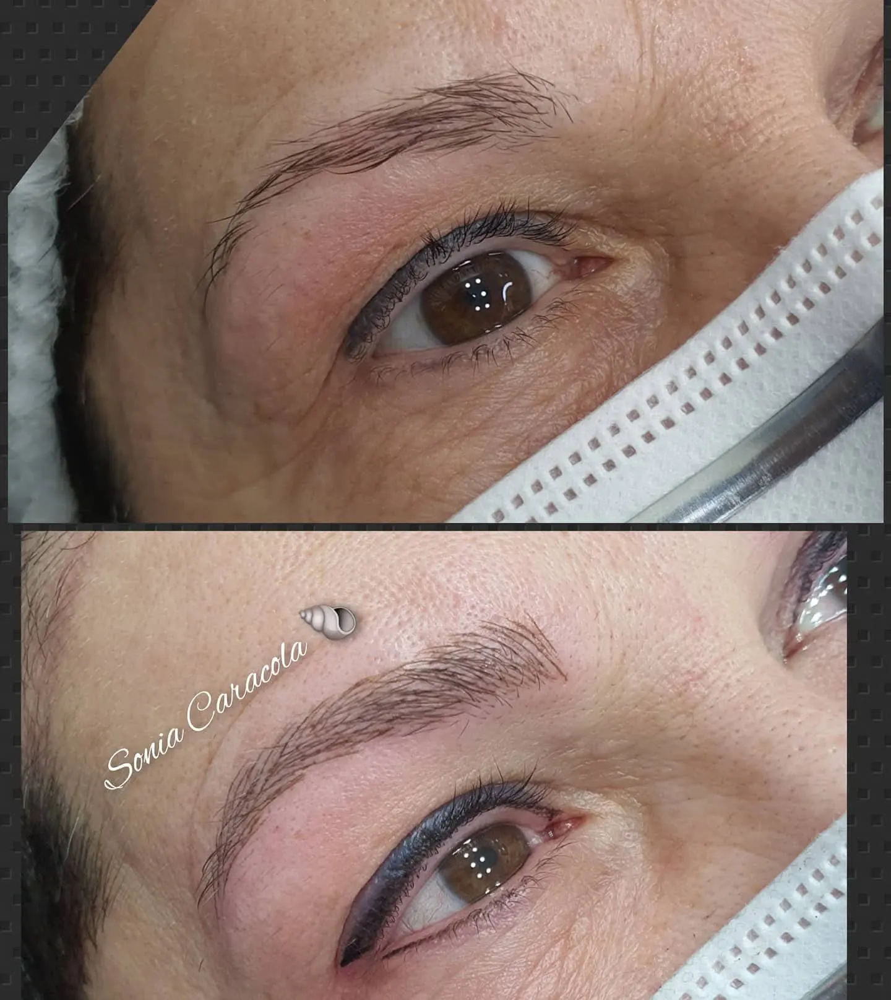
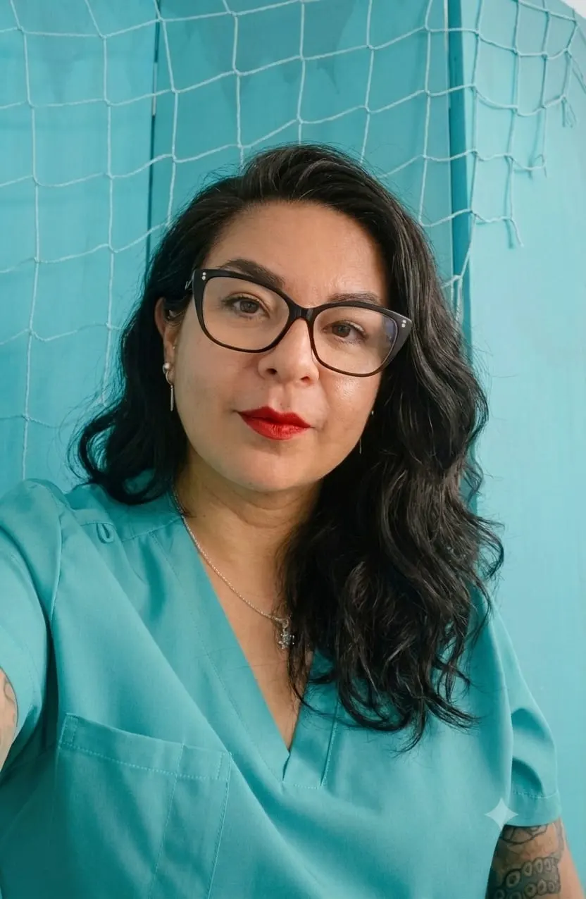
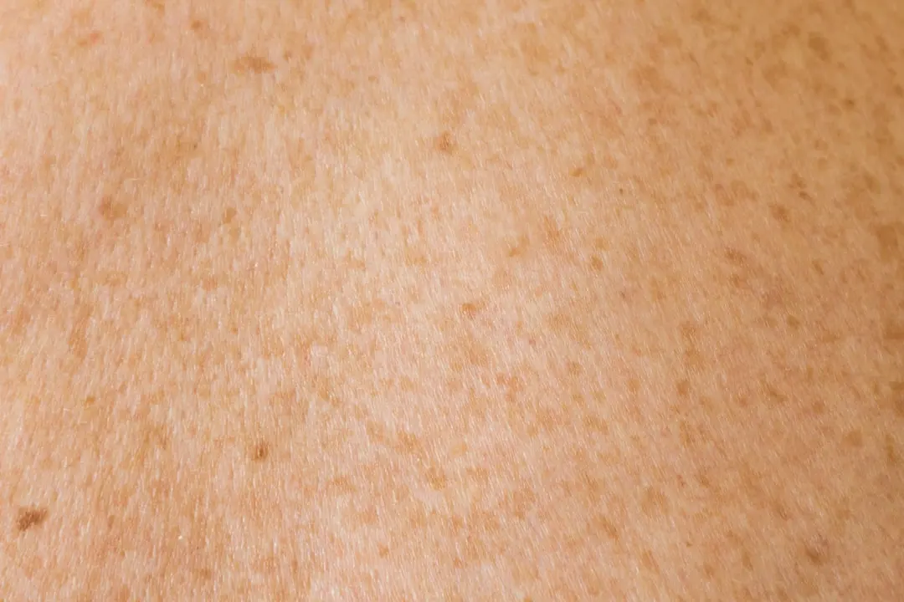

Cuidado facial y belleza diaria
Higiene facial profunda, BB Glow, depilación, manicura, pedicura SPA y diseño de mirada.
En Sonia Caracola combinamos experiencia, innovación estética y protocolos personalizados para realzar tu belleza con resultados visibles y duraderos.
Tratamientos faciales, corporales y de belleza diseñados para realzar tu bienestar con un estilo sereno, natural y profundamente cuidado.

Higiene facial profunda, BB Glow, depilación, manicura, pedicura SPA y diseño de mirada.

Maderoterapia, presoterapia, cavitación y protocolos corporales para sentirte más ligera y cuidada.
Armonización facial, bioestimulación, exosomas y revitalización capilar con valoración personalizada.

Micropigmentación, reconstrucción paramédica, eliminación de tatuajes y tratamientos de precisión.

Diseño de mirada, cejas, pestañas y maquillaje profesional con acabados elegantes y sofisticados.
Cuéntanos qué buscas y te orientamos con una recomendación personalizada.
Ver todos los tratamientosComo la fuerza renovadora del mar, fusionamos naturalidad y tecnología avanzada para ofrecer tratamientos estéticos diseñados para que tu belleza fluya con armonía, precisión y resultados visibles.
Protocolos especializados que revitalizan tu piel desde el interior.
Equipos innovadores para una remodelación precisa y segura.
Manos profesionales que diseñan cada tratamiento según tus necesidades.
Resultados visibles que realzan tu belleza natural con equilibrio.


Dicen que si te acercas una caracola al oído puedes escuchar el rumor del océano. Para mí, Sonia Caracola es exactamente eso: un refugio donde reconectar con tu propia tranquilidad.
A lo largo de mi trayectoria he aprendido que los mejores resultados nacen de la paciencia, el mimo y la honestidad profesional. Por eso cada protocolo se vive como una experiencia serena y personalizada.
Tratamientos de vanguardia creados desde la experiencia, la escucha y el mimo real.
Fusionamos naturalidad y tecnología avanzada para regenerar, remodelar y revitalizar tu piel con resultados visibles y duraderos.
Confía en manos expertas para vivir una experiencia personalizada que devuelve a tu piel vitalidad.
Pide cita llamando al 614 253 037Cada tratamiento en Sonia Caracola está pensado como una pausa para volver a ti. Cuidamos tu piel, tu cuerpo y tu bienestar con técnicas avanzadas, productos seleccionados y un trato cercano.
Porque la verdadera belleza nace cuando te sientes bien por dentro y por fuera.


Experiencias personalizadas que regeneran, revitalizan y realzan tu esencia.
Analizamos tu piel, tu cuerpo o tu objetivo estético para diseñar un protocolo adaptado.
Tratamientos faciales y corporales que buscan revitalizar, remodelar y aportar luminosidad natural.
Desde diseño de mirada hasta cuidados de manos y pies para recuperar frescura, energía y confianza.
Te acompañamos con cercanía, precisión profesional y atención enfocada en resultados duraderos.
★★★★★
Valoración 4,7 en Google con 15 reseñas
Un centro precioso y muy profesional. Salí encantada con el tratamiento facial y el trato recibido.
Laura M.Hace 2 semanasAtención impecable, tecnología avanzada y resultados visibles desde la primera sesión. Totalmente recomendable.
Sara P.Hace 1 mesEl mejor centro de estética en Leganés. Profesionalidad, cercanía y una experiencia realmente premium.
Andrea G.Hace 3 semanasConsejos, tendencias y recomendaciones para cuidar tu piel y potenciar tu belleza natural.
Cómo combinar limpieza, hidratación y tratamientos profesionales para que la piel vuelva a sentirse fresca y luminosa.
Leer más.jpeg)
Una guía clara para entender la maderoterapia dentro de un protocolo corporal personalizado.
Leer más
Qué debes saber antes de un tratamiento de BB Glow y cómo cuidar la piel después de la sesión.
Leer másC. de Madrid, 16, 28912 Leganés, Madrid
Reserva tu cita en Sonia Caracola y descubre una experiencia personalizada de estética avanzada en Leganés.
C. de Madrid, 16, 28912 Leganés, Madrid
● Abierto ahora
Estamos en C. de Madrid, 16, 28912 Leganés, Madrid, en un espacio pensado para disfrutar de tratamientos de estética avanzada con calma y atención personalizada.
Sí. Recomendamos reservar cita por teléfono o WhatsApp para poder dedicarte el tiempo necesario y preparar el protocolo adecuado.
Realizamos tratamientos faciales, corporales, protocolos de medicina estética avanzada, diseño de mirada, manicura, pedicura y servicios de belleza personalizados.
En la primera visita escuchamos tus objetivos y analizamos tu caso para recomendarte una opción realista, segura y adaptada a tu piel o a tus necesidades de belleza.